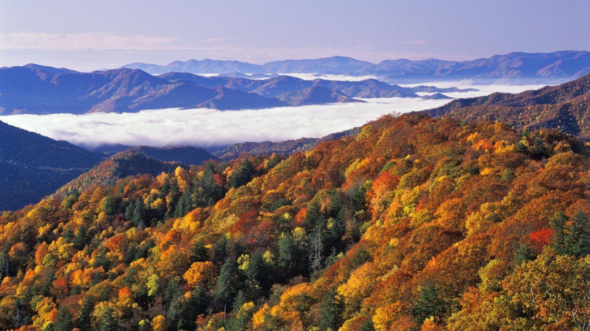
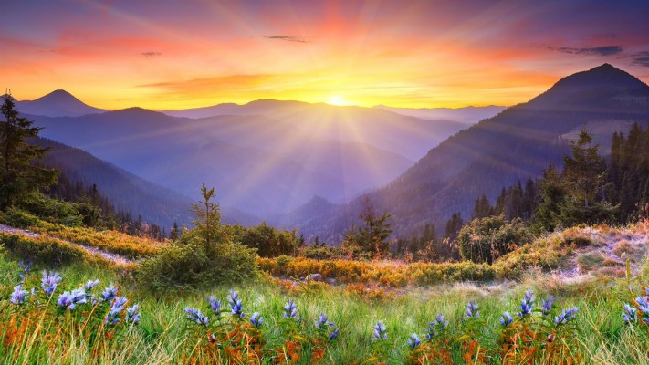
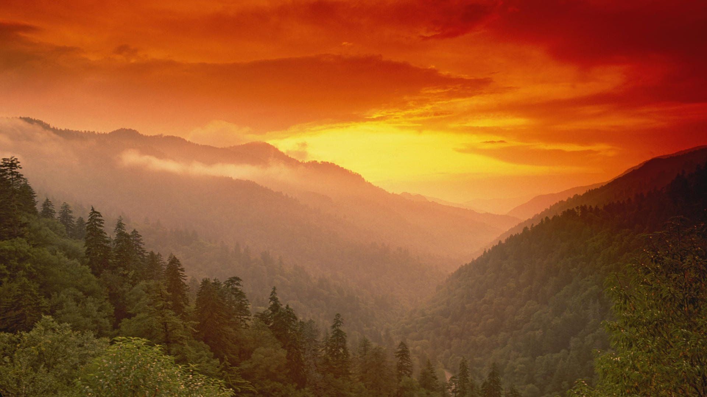

The Great Smoky Mountains is a wondrous diversity of life, and gives an amazing and enjoyable view for everyone. It is a great vacation trip for everyone to appreciate, and is something that everyone is fond of.



Creation
Rivers and streams carried large amounts of sediment into a basin for over millions of years. The sediment then cemented into layers of rock over 9 miles thick. Then, about 10,000 years ago, glaciers from the north advanced during the Pleistocene Epoch. At that time, the Smokies were already millions of years old. Then, the glacier cooled the climate of the entire area. It was established as the Smokies in 1926.
Videos
There are a lot of videos describing the Smokies. Here are a few.
Reviews
"The ride up alone was breathtaking, when we stopped at Newfound Gap the views were amazing. Temperature range was ~15 degrees depending on when you looked. Did not walk to Clingmans dome views from parking lot was enough for us."
"Always out favorite place to visit with so much to see and do. We hiked Schoolhouse Gap tral to see wildflowers. Drove Little River Road to enjoy the beautiful scenery."
"Enjoyed the scenery. Was lucky enough to be here for the early wildflowers. Very magical at times. There was some snow and rain but still managed to get hikes in to the waterfalls. I can see why this is the busiest park."
I've went there before and enjoy it a lot, but I wished I had more time and can get to see it again. You should go see it to!